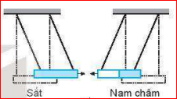
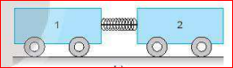
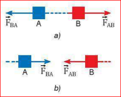
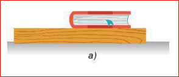
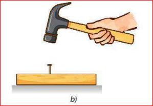
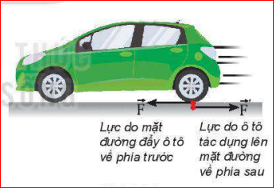

Móc hai lực kế vào nhau rồi kéo một trong hai lực kế như hình sau.
a) Dự đoán xem số chỉ của hai lực kế giống nhau hay khác nhau.
b) Hãy kiểm tra kết quả và nêu kết luận.
c) Nếu cả hai tiếp tục kéo về hai phía ngược nhau với độ lớn lực tăng lên thì số chỉ của hai lực kế sẽ thay đổi thế nào?
Hướng giải quyết:
a) Dự đoán: Số chỉ của hai lực kế giống nhau.
b) Kết luận: Khi hai vật tương tác với nhau, chúng tác dụng lên nhau các lực có độ lớn bằng nhau.
c) Nếu lực kéo tăng lên, số chỉ của cả hai lực kế đều tăng lên và luôn duy trì giá trị bằng nhau.
Quan sát thí nghiệm được mô tả trong Hình 16.1.

a) Thanh sắt và nam châm

b) Hai xe lăn và lò xo
Lời giải:
1. Lực từ do thanh sắt tác dụng lên nam châm làm nam châm dịch chuyển lại gần thanh sắt. (Đồng thời nam châm cũng hút sắt).
2. Khi đốt dây, lò xo giãn ra đẩy cả hai xe văng về hai phía ngược nhau. Điều này chứng tỏ xe 1 đẩy xe 2, đồng thời xe 2 cũng đẩy lại xe 1. Qua đó thấy rằng lực luôn xuất hiện thành từng cặp (tác dụng qua lại lẫn nhau).
Phát biểu định luật:
Trong mọi trường hợp, khi vật A tác dụng lên vật B một lực thì vật B cũng tác dụng trở lại vật A một lực. Hai lực này là hai lực trực đối.
Hai lực trực đối là hai lực tác dụng theo cùng một đường thẳng, ngược chiều nhau, có độ lớn bằng nhau và điểm đặt lên hai vật khác nhau.

Hình 16.2. Cặp lực và phản lực
Theo định luật 3 Newton, trong tương tác giữa hai vật, một lực gọi là lực tác dụng còn lực kia gọi là phản lực.
Lời giải:
Hãy chỉ rõ điểm đặt của mỗi lực trong mỗi cặp lực ở Hình 16.2 a, b.
Lời giải:
- Hình 16.2a (Hai ngón tay móc vào nhau): Lực \(\vec{F}_{AB}\) đặt tại ngón tay B, lực \(\vec{F}_{BA}\) đặt tại ngón tay A.
- Hình 16.2b (Hai xe đâm nhau): Lực \(\vec{F}_{AB}\) đặt tại xe B, lực \(\vec{F}_{BA}\) đặt tại xe A.

Hình 16.3a

Hình 16.3b
Lời giải:
1. a) Sách nén lên bàn một lực, bàn tác dụng lại sách một phản lực.
b) Búa tác dụng lực vào đinh đẩy đinh xuống, đinh tác dụng phản lực vào búa làm búa bật lại.
2. Không. Quyển sách nằm yên do sự cân bằng của 2 lực: Trọng lực (Trái Đất hút sách) và Phản lực của bàn (bàn đỡ sách). Đây không phải cặp lực-phản lực của ĐL 3 Newton.
3. Cùng phương, ngược chiều, cùng độ lớn, điểm đặt khác nhau (một đặt ở búa, một đặt ở đinh), xuất hiện đồng thời.
Thảo luận / Hoạt động:
1. Số chỉ 2 lực kế vẫn giống hệt nhau ở mọi thời điểm, dù hệ đang đứng yên hay chuyển động. Đây là tính chất tuyệt đối của Định luật 3 Newton.
2. Ví dụ: Quả bóng đập vào tường. Bóng tác dụng lực nén làm tường biến dạng nhẹ (Lực đàn hồi). Tường tác dụng lực bật ngược lại làm bóng nảy ra. Hai lực này cùng độ lớn, ngược chiều, nhưng đặt ở 2 vật khác nhau nên bóng bị văng ra mà không đứng yên tại tường.

Một ô tô chuyển động trên mặt đường (Hình 16.4), nếu lực do ô tô tác dụng lên mặt đường có độ lớn bằng lực mà mặt đường đẩy ô tô thì tại sao chúng không "khử nhau"?
Lời giải:
Hai lực này không "khử nhau" (không cân bằng nhau) vì chúng tác dụng lên hai vật hoàn toàn khác nhau. Lực đẩy tác dụng lên mặt đường (làm đường có xu hướng lùi lại), còn phản lực tác dụng lên bánh xe ô tô (làm ô tô tiến lên). Do đó xe vẫn được gia tốc để chuyển động tiến về phía trước.
Định luật 3 Newton: Trong mọi trường hợp, khi vật A tác dụng lên vật B một lực, thì vật B cũng tác dụng trở lại vật A một lực. Hai lực này tác dụng theo cùng một phương, cùng độ lớn, nhưng ngược chiều, điểm đặt lên hai vật khác nhau:
\( \vec{F}_{AB} = -\vec{F}_{BA} \)
Giải thích tại sao các vận động viên khi bơi tới mép hồ bơi và quay lại thì dùng chân đẩy mạnh vào vách hồ bơi để di chuyển nhanh hơn.
Theo định luật 3 Newton, khi vận động viên dùng chân đạp mạnh vào vách hồ (tác dụng lực lên vách hồ hướng ra phía sau), thì vách hồ cũng tác dụng lại chân vận động viên một phản lực có cùng độ lớn nhưng hướng về phía trước. Phản lực này đóng vai trò là lực đẩy, giúp cơ thể vận động viên lao đi trong nước nhanh hơn.
Học sinh rất hay nhầm lẫn giữa Hai lực cân bằng và Cặp lực - Phản lực. Điểm mấu chốt để phân biệt: Hai lực cân bằng tác dụng vào CÙNG MỘT VẬT, trong khi Cặp lực - phản lực tác dụng lên HAI VẬT KHÁC NHAU tham gia tương tác.
Bài 1:
Hai người trượt băng đứng đối diện nhau trên mặt băng nhẵn. Người A khối lượng 50kg, người B khối lượng 60kg. Người A đẩy người B với một lực 30N. Tính gia tốc mà mỗi người nhận được ngay lúc đẩy (Bỏ qua ma sát).
Giải:
Theo định luật 3 Newton, người A đẩy người B lực \(F_{A \rightarrow B} = 30N\), thì người B cũng đẩy lại A lực \(F_{B \rightarrow A} = 30N\).
Áp dụng định luật 2 Newton cho từng người:
Bài 2:
Một quả bóng khối lượng 0.5kg bay với tốc độ 10 m/s đập vuông góc vào một bức tường rồi bật ngược lại với tốc độ 8 m/s. Thời gian va chạm là 0.05 giây. Tính độ lớn lực trung bình do tường tác dụng lên quả bóng và lực do quả bóng tác dụng lên tường.
Giải:
Chọn chiều dương là chiều bóng bật ra khỏi tường. \(v_0 = -10 \text{ m/s}, v = 8 \text{ m/s}\).
Gia tốc của quả bóng: \(a = \frac{v - v_0}{\Delta t} = \frac{8 - (-10)}{0.05} = 360 \, \text{m/s}^2\)
Lực do tường tác dụng lên bóng: \(F = m \cdot a = 0.5 \cdot 360 = 180 \, \text{N}\)
Theo định luật 3 Newton, lực do bóng tác dụng lên tường có cùng độ lớn bằng phản lực của tường. Vậy lực bóng tác dụng lên tường là \(180 \, \text{N}\).
Bài 3:
Một học sinh đá vào một hòn đá khối lượng 2kg đang nằm yên trên mặt đất. Chân tác dụng vào đá một lực 50N trong thời gian 0.02s. Tính vận tốc của hòn đá ngay sau khi đá. Cho biết lực mà hòn đá tác dụng lại chân học sinh là bao nhiêu?
Giải:
Theo định luật 2 Newton, gia tốc của hòn đá: \(a = \frac{F}{m} = \frac{50}{2} = 25 \, \text{m/s}^2\)
Vận tốc của hòn đá: \(v = v_0 + a \cdot t = 0 + 25 \cdot 0.02 = 0.5 \, \text{m/s}\)
Theo định luật 3 Newton, hòn đá tác dụng lại chân học sinh một phản lực bằng đúng lực tác dụng là \(F' = 50 \, \text{N}\) (ngược chiều chuyển động của chân).